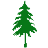

En cada una de las fichas de las descripciones de las especies aparece algunas características generales
NOMBRE CIENTÍFICO : Se refiere a la terminología utilizada por la Taxonomía, rama de la biología que se ocupa de la clasificación de los organismos, agrupa los organismos en distintas categorías taxonómicas (reino, división, clase, orden, familia, género, especie, etc.). Se utiliza el sistema binomial, inventado por Carlos Lineo en el siglo XVIII, ya sigue siendo el más utilizado. El mismo consta de dos nombres, de ahí lo de binomial, el primero se refiere al Género (que es la categoría intermedia entre la Familia y la Especie), mientras que el segundo nombre es el epíteto específico. Casi siempre tanto el epíteto genérico y el específico hacen referencia tanto a características morfológicas, como referencias geográficas, también se hace referencia a personas. Acá les mostramos un ejemplo de nombre científico de una especie nativa y de una especie exótica: Roble pellín , el nombre científico es: Nothofagus obliqua. Donde Nothofagus corresponde al género que agrupa a varias especies de Nothofagus, valga la redundancia, este nombre está en idioma latín y está formado por dos vocablos Notho (falso) y Fagus (haya) y quiere decir “falsa haya”, esto es debido a sus semejanzas con las Hayas (género Fagus); mientras que obliqua se refiere a la base de la hoja tiene forma asimétrica y oblicua. Fresno blanco , el nombre científico es: Fraxinus americana. En este caso el nombre del género Fraxinus, es el nombre en latín del fresno; en tanto que el epíteto específico americana está referido a su lugar de origen que es Estados Unidos y Canadá.
Latifoliada perenne
Latifoliada caduca

Conífera perenne
Conífera caduca
MAGNITUD : Cuando nos referimos a la magnitud, tiene que ver la altura que alcanza la especie cuando entra en la madurez. Cabe aclarar que se menciona el tamaño que alcanzan en los lugares relevados, mientras que en la descripción se mencionan el tamaño que adquiere en su ambiente natural, no siempre coinciden, ya que existen especies que en su área de distribución natural llegan a un tamaño y cuando se las implanta en lugares más favorables lo superan o, si es un sitio desfavorable no lo alcanzan. Ésta categorización, un tanto relativa, se divide en tres categorías: las especies de Tercera magnitud, alcanzan como máximo los 10 metros de altura, las especies de Segunda magnitud, tiene alturas de entre 10 y 20 metros de altura y los ejemplares de Primera magnitud superan largamente los 20 metros de altura.